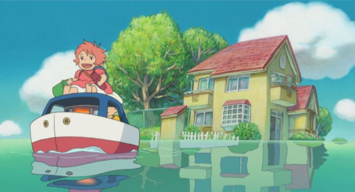

Generally, it can be said that all of the films made by "Studio Ghibli" achieve a certain minimum of praise and quality, an impressive feat to maintain for so long. Only a couple films have a poor reputation among Ghibli's fans: one of them is 2008's "Ponyo," directed by Hayao Miyazaki late in his career, harkening back to his classic "My Neighbor Totoro" in being made primarily for children. I suspect nay-sayers of "Ponyo" were like me and didn't like the odd character designs and juvenille story that the promotional material conveyed, reasons for which I held off watching the film for a long time. By which I mean, I think most nay-sayers judged the film without having actually SEEN it. If you read most reviews (at least those referred on Wkikpidia circa 2018), you will find most opinions to be glowing.Anyway, what I'm getting at is that "Ponyo" isn't nearly as bad as some anime fans will suggest, and is in fact quite good. But some strange story choices made in an effort to be whimsical weigh down the film against the catelog of Ghibli classics. If someone mentions the classic fable "The Little Mermaid," you are likely to think first of the Disney animated film. "Ponyo" is also an adaption of the fairy tale, but takes creative liberties to be different from both the Disney version and the original story. "Ponyo" features a crazy old magician living at the bottom of the sea as he plots to destroy the human race for their crime of continously polluting the beautiful oceans. The magician has many fish-daughters, one of which is particularly rambunctious and escapes to the service world. On land, she is found by a young child named Sauske, who names her Ponyo and assumes her a simple fish when he returns her back to the sea. Wanting to reunite with her new friend, Ponyo gets into her father's magic and turns herself into a human, but doing so upsets the balance of the world and causes a massive storm that floods the town.The story is a sweet and magical tale of love and friendship, perfectly suited for young audiences. But the logic choices between all the characters are unbelievable: why does no one bat an eye when they witness Ponyo's magical abilities? Why does Ponyo's father completely forget about his revenge against the human race by the end of the movie, reducing the plot point to be meaningless to the adventure? Why is Sauske's mother so understanding about the events occurring to her toddler? Both Sauske and Ponyo barely look older than five-years-old, and the story carries on as if they themselves had written the story. The result is a uniquely innocent sense of wonder that can be simultaneously respected and ridiculed by adults who no longer have the imagination of children... and perhaps mocked by most children as well. The art style is also divisive. It looks different from anything else Miyazaki has directed, taking a little inspiration from Ghibli's other director Isao Takahata in using simple watercolor/crayon backgrounds to make the film feel more like a storybook. I actually liked this style very much, but it felt simplistic against the more standard rendering of the characters. The character designs themselves are more alienating than Ghibli's usual work, again largely because of how they draw young children: I cannot get past that Ponyo's human form looks like a red frog wearing a diaper. Generally, character animation is surprisingly expressive, and the water effects that feature so heavily in the movie are beautiful. The music features sweeping orchestral melodies, and the English dub (complete with English versions of the children's song in the end credits) are... ok. Depending on your mood entering a viewing of "Ponyo," you may think it was the worst or the best film Studio Ghibli has ever made, simultaneously the most beautiful and most ugly, the most sweet and the most confounding. Truely, it is a good movie, and you really should see it for yourself.
- "Ani" More reviews can be found at : https://2danicritic.github.io/ Previous review: review_Pompo_-_the_Cinephile Next review: review_Pop_in_Q